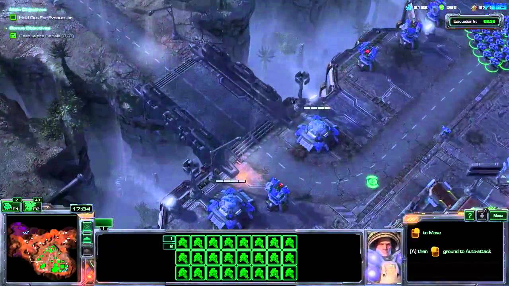

StarCraft II: Wings of Liberty is a science fiction real-time strategy video game developed and
published by Blizzard Entertainment. It is a sequel to the 1998 video game StarCraft and its
expansion set Brood War.
The game features the return of the three species from the original game: Protoss, Terran, and
Zerg. In the Terran campaign, the original StarCraft briefing room is replaced with an
interactive version of the battlecruiser Hyperion, with Jim Raynor, now a bitter and
hard-drinking mercenary captain, as the central character.
In a departure from previous Blizzard games, the campaign is non-linear, with Raynor taking jobs
for money and using that money to buy additional units and upgrades. Although each play through
will vary, the end result remains consistent, keeping the storyline linear. Blizzard's Vice
President Rob Pardo stressed that each campaign will function very differently.
Terran campaign, Wings of Liberty, places players in a mercenary-style campaign, as Terran rebel
group Raynor's Raiders raise funds by taking assignments from outside groups. The second
release, Heart of the Swarm, is Zerg-focused and has role-playing elements. Kerrigan is the
focus of the campaign, and the story revolves around the possibility of her redemption. The
Protoss-themed Legacy of the Void is the final expansion, with the Protoss Artanis attempting to
reunite the Protoss tribes in order to stop Amon, a fallen Xel'Naga.
in battle.net